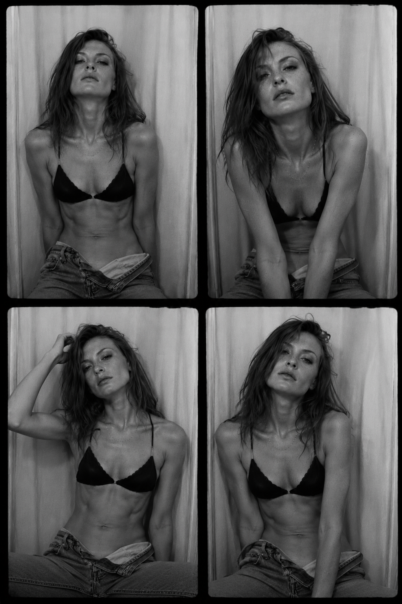
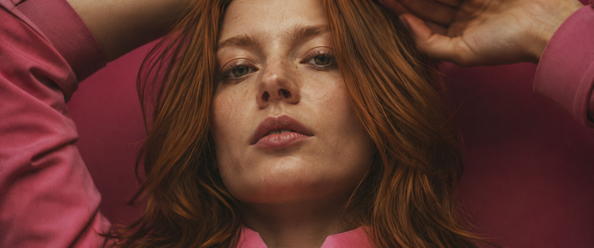
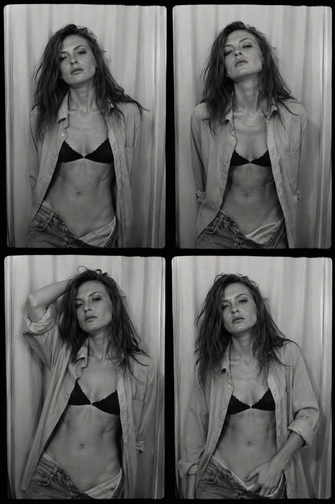
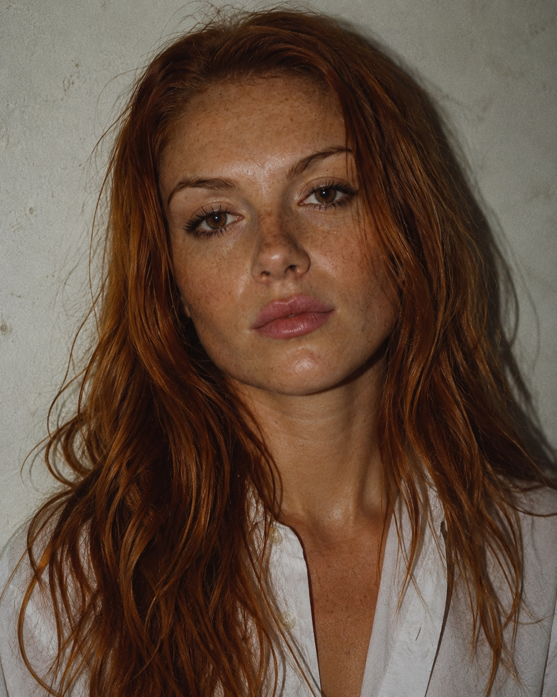
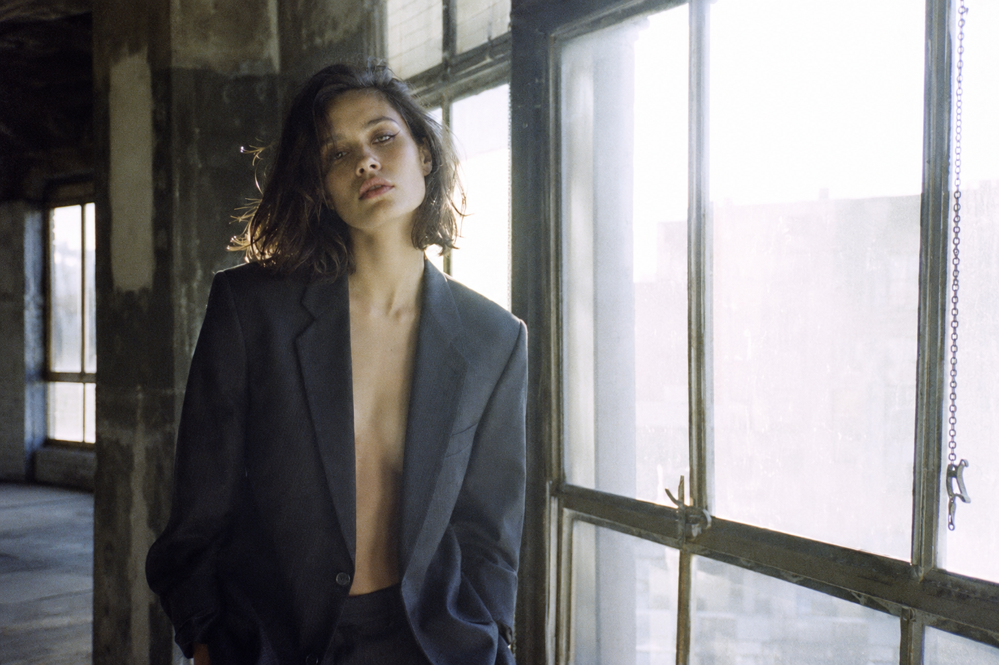

Coulisses
Première passe en lumière disponible, le rideau comme seul décor. Le set garde son aplomb sur tout le rouleau — même distance, même mur, seule l'inclinaison de la tête change la lecture.

Direction visuelle pour l'image et le film, composée comme la pellicule se souvient d'une pièce — le grain, l'espace laissé vide, un corps abandonné pour l'essentiel à l'ombre.
Someday Production dirige l'image fixe et animée pour la mode et l'éditorial, construite plan par plan plutôt que générée d'un bloc. Chaque set est ancré dans un registre analogique — le comportement de la pellicule Kodak Vision3, un cadre cinémascope, une caméra fixe et un sujet qui a le droit de bouger à l'intérieur.
Le travail privilégie la suggestion à la frontalité : ce qu'un plan retient dit plus que ce qu'il montre. Le grain, le halo et l'imperfection d'un vrai objectif sont traités comme volontaires — jamais lissés au nom du poli.

Première passe en lumière disponible, le rideau comme seul décor. Le set garde son aplomb sur tout le rouleau — même distance, même mur, seule l'inclinaison de la tête change la lecture.

Une couche en plus change la silhouette sans changer le set. La continuité sur un rouleau est une discipline — la direction se voit dans ce qui reste fixe, pas dans ce qu'on ajoute.
Le dernier plan du rouleau tourne le dos à la caméra. Le contre-jour efface le visage et ne laisse que la silhouette et le pas — la suggestion poussée jusqu'à son terme.

Tiré du rouleau pour la couleur seule — le roux contre le mur brut porte tout le cadre, sans autre décor nécessaire.

Un décor trouvé plutôt que construit — verrière, béton, un blazer emprunté trop grand. La lumière de fenêtre fait le travail qu'un projecteur aurait forcé.
Même grammaire qu'à l'arrêt sur image : caméra fixe, le sujet seul autorisé à bouger dans le cadre.
Extrait de la collection Printemps-Été 26 — même approche, la caméra qui observe plutôt qu'elle ne dirige.
Une planche de casting, un même cadre pour dix visages — même mur brut, même lumière plate, même chemise blanche. Le point commun du studio devient le décor ; ce qui change, c'est tout le reste.